Master Japanese with literal fun!
猫の手も借りたい
ねこのてもかりたい
Want to borrow even a cat's paw
"Extremely busy"
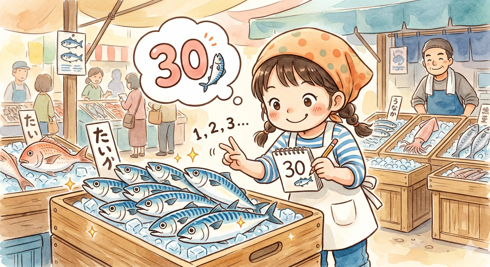
サバを読む
さばをよむ
Reading the mackerel
"To fudge numbers"
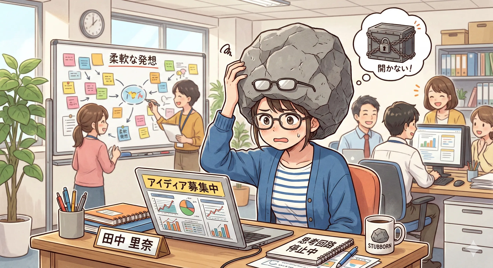
頭が固い
あたまがかたい
Hard head
"Stubborn / Inflexible"
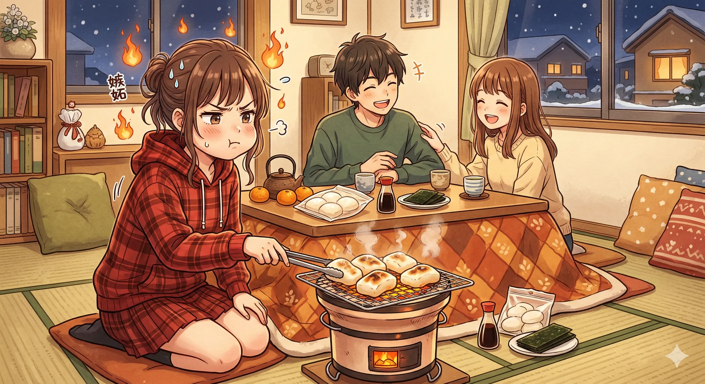
やきもちを焼く
やきもちをやく
Grilling mochi
"To be jealous"
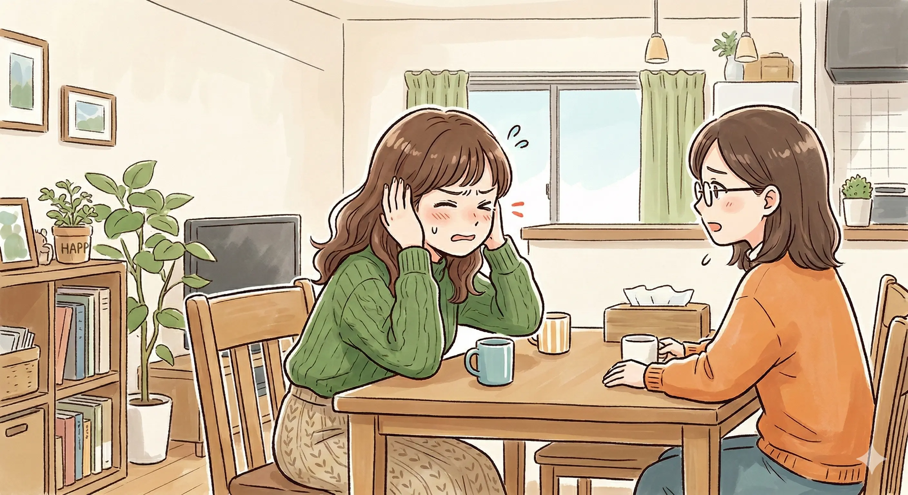
耳が痛い
みみがいたい
Ears are aching
"Hard to hear the truth"
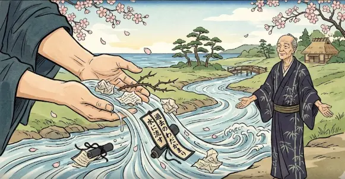
水に流す
みずにながす
Let it flow into the water
"Forgive and forget"
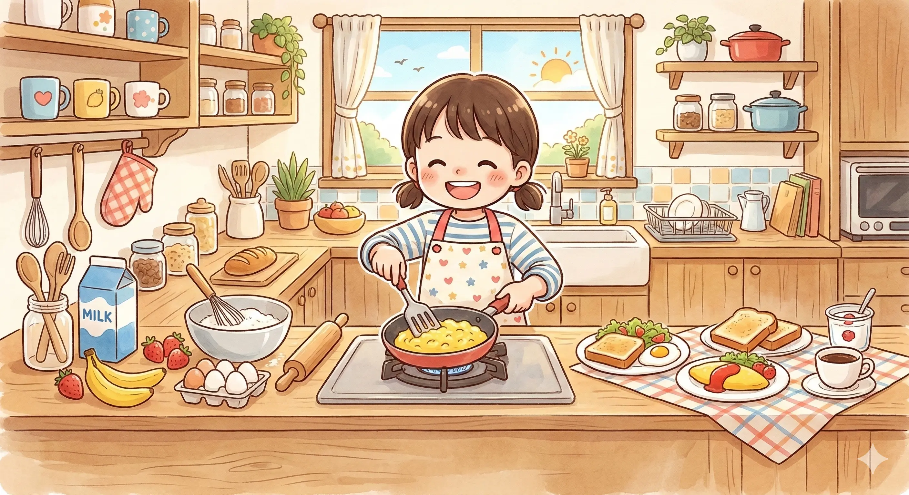
朝飯前
あさめしまえ
Before breakfast
"Piece of cake"
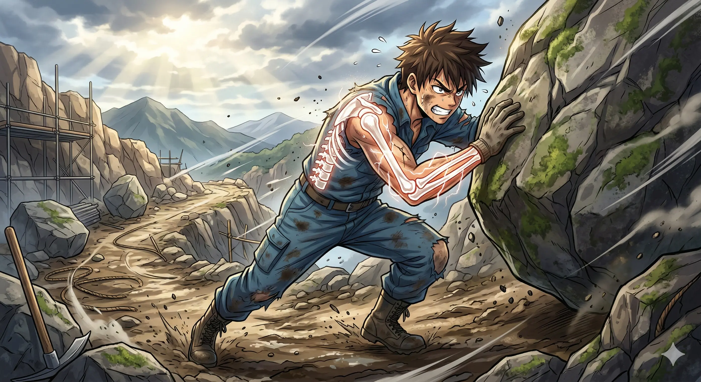
骨を折る
ほねをおる
Breaking a bone
"Take great pains"
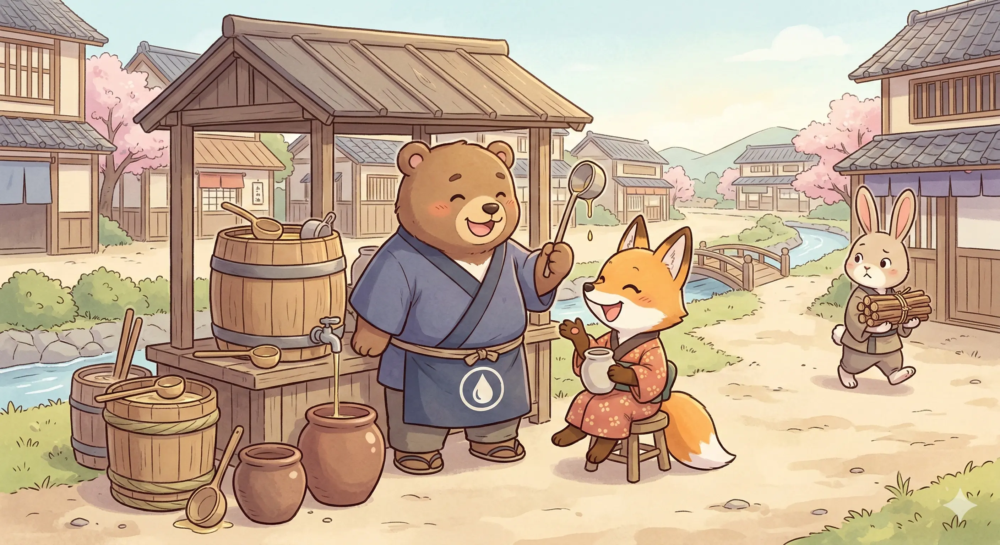
油を売る
あぶらをうる
Selling oil
"To idle away time"
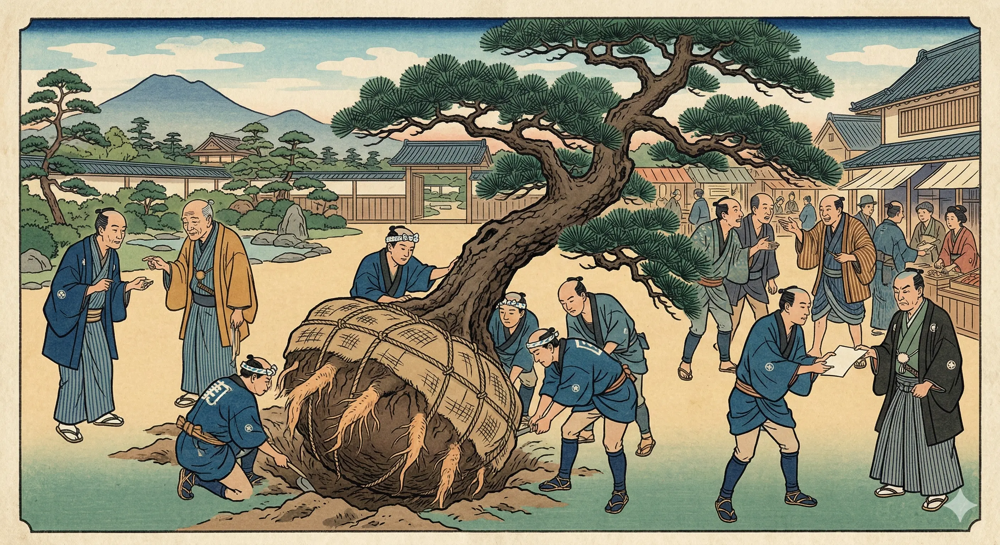
根回し
ねまわし
Digging around the roots
"Laying groundwork"
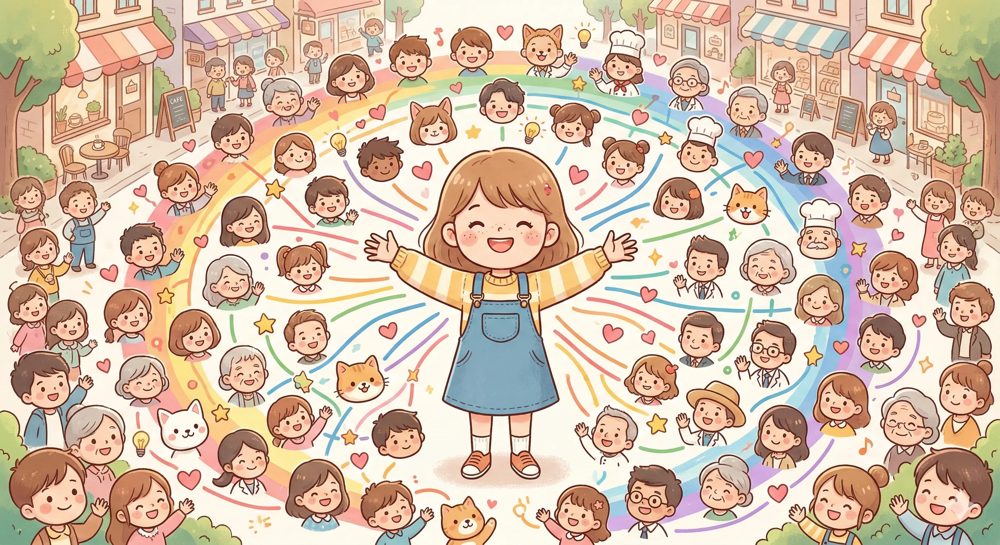
顔が広い
かおがひろい
Wide face
"Well-connected"
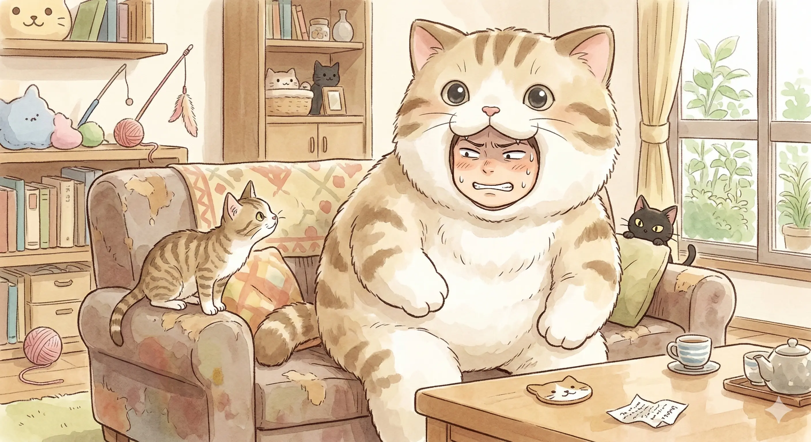
猫をかぶる
ねこをかぶる
Wearing a cat
"Playing innocent"
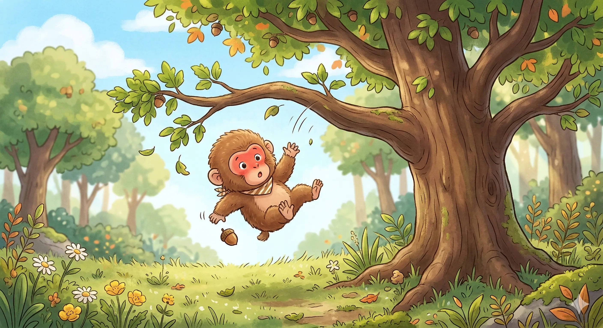
猿も木から落ちる
さるもきからおちる
Even monkeys fall from trees
"Even experts fail"
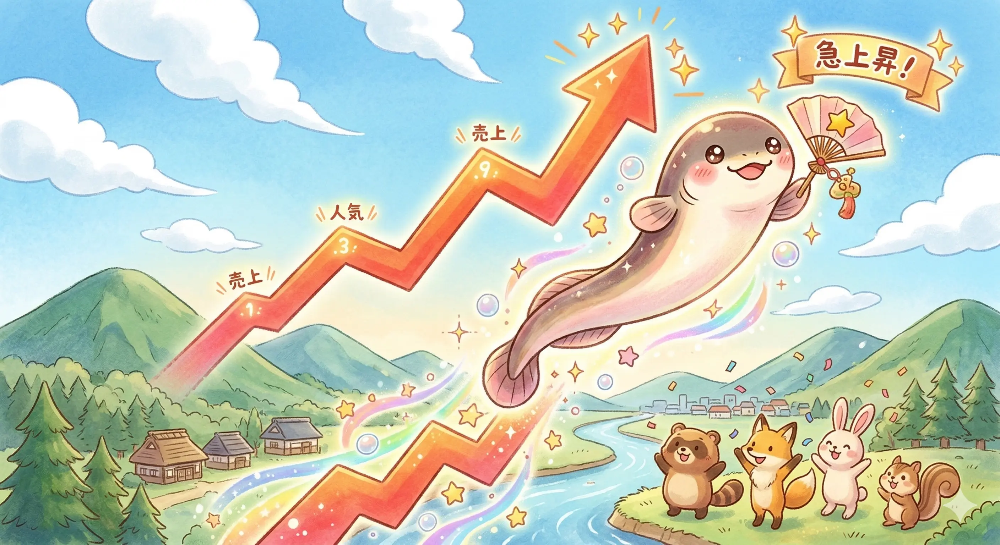
鰻登り
うなぎのぼり
Climbing like an eel
"Skyrocketing"
炎上する
えんじょうする
Going up in flames
"Social media backlash"
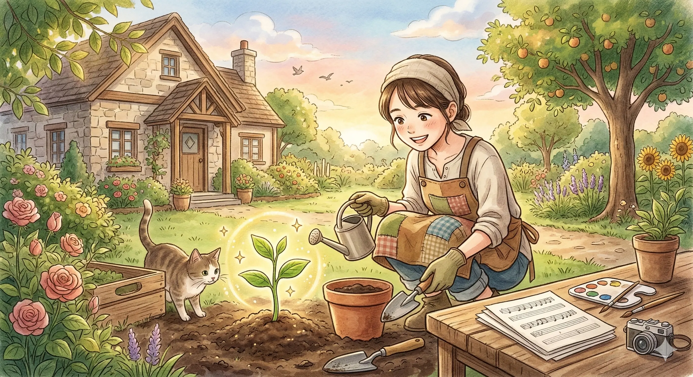
芽が出る
めがでる
Sprouting a bud
"Showing signs of success"
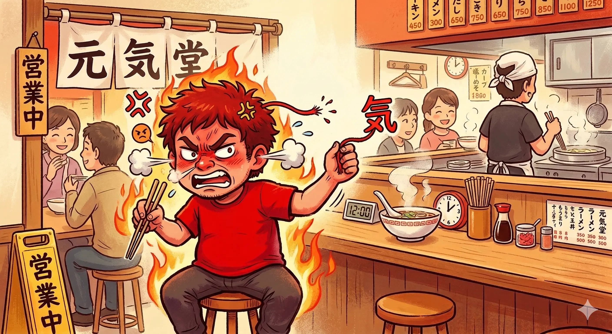
気が短い
きがみじかい
Short energy
"Short-tempered"
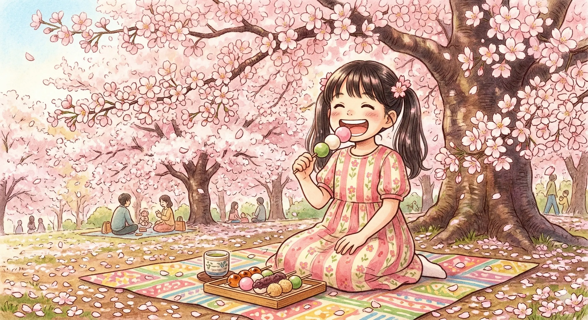
花より団子
はなよりだんご
Dumplings over flowers
"Practicality over beauty"
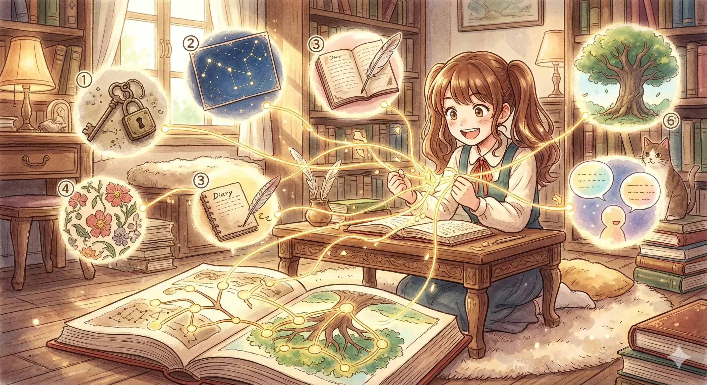
伏線回収
ふくせんかいしゅう
Collecting hidden lines
"Payoff of foreshadowing"
鵜呑みにする
うのみにする
Swallow like a cormorant
"Accept without question"
ネタバレ
ねたばれ
Material leak
"Spoiler"
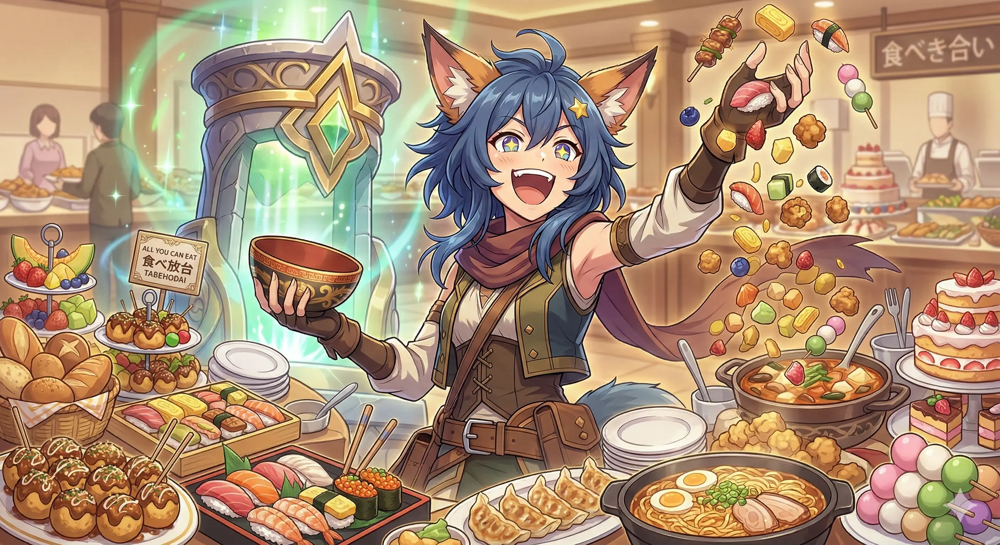
元を取る
もとをとる
Taking the origin
"Get money's worth"
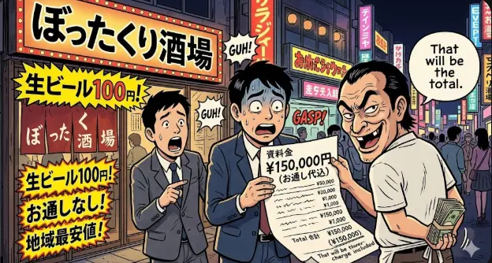
ぼったくり
ぼったくり
Plucking/Stripping
"Rip-off"
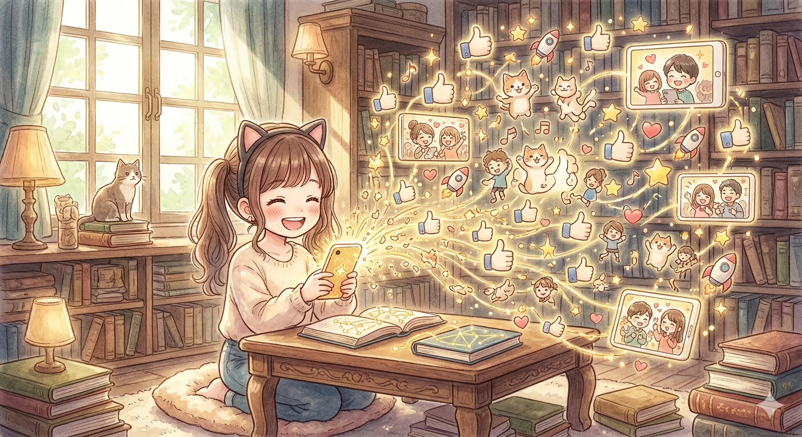
バズる
ばずる
Creating a buzz
"To go viral"
If you find these materials helpful, please consider supporting us!
☕️ SUPPORT OHAYO CENTER